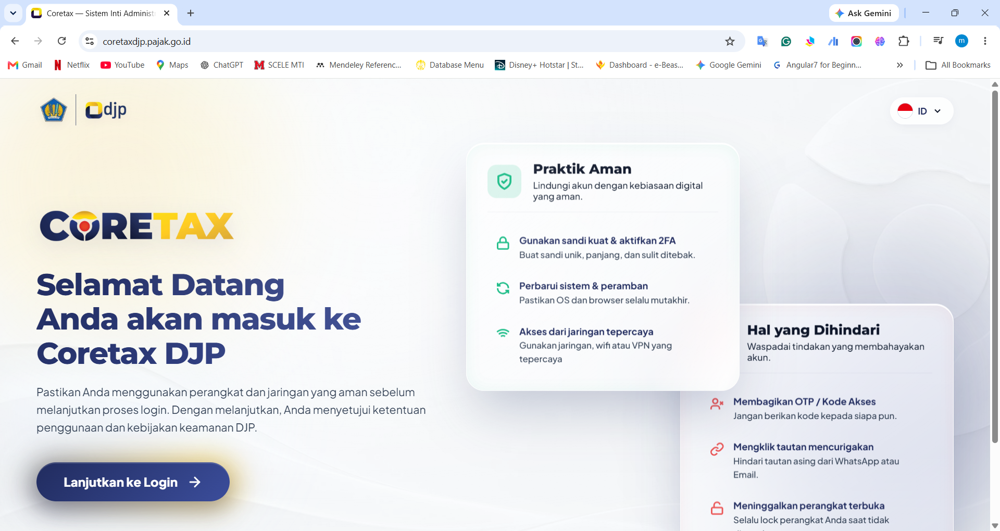
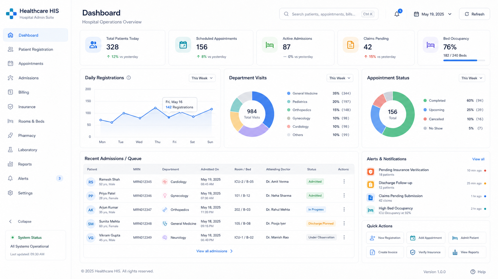
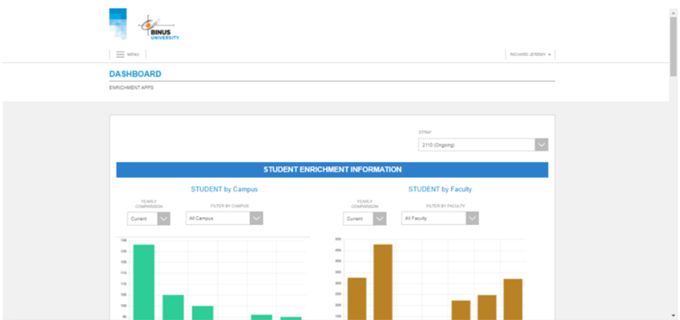
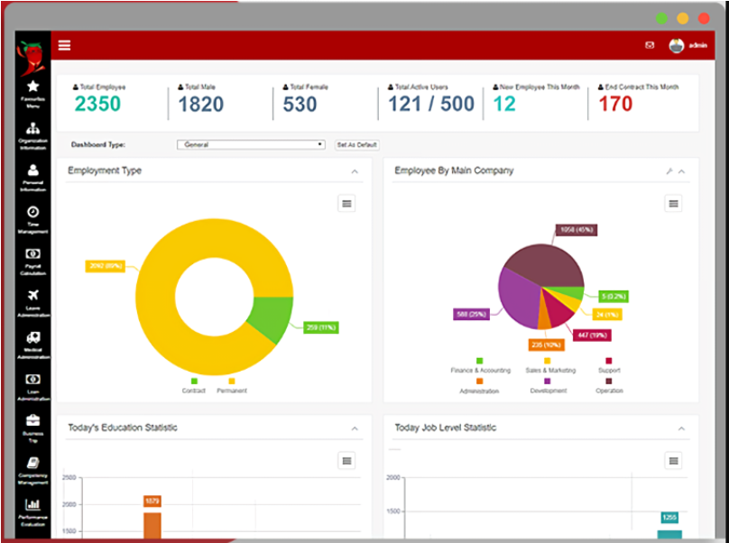
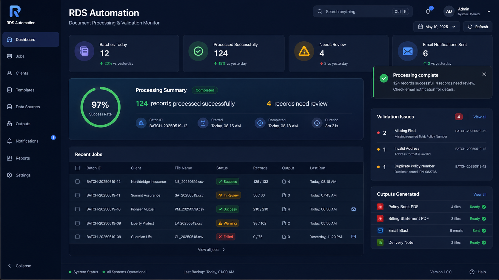
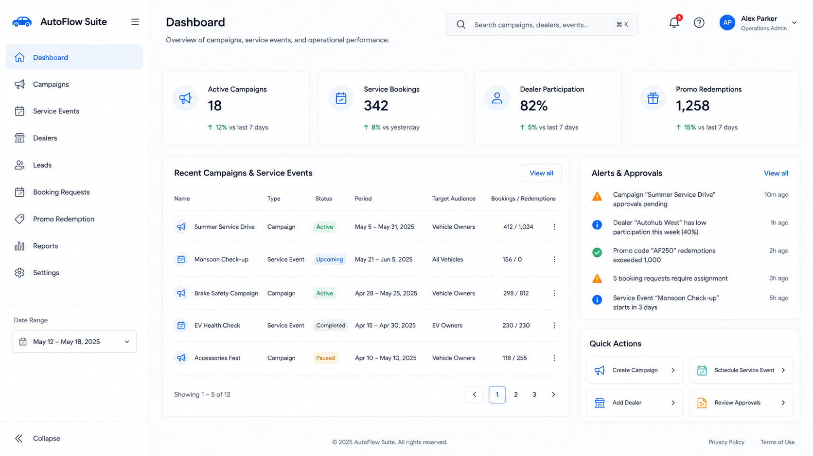
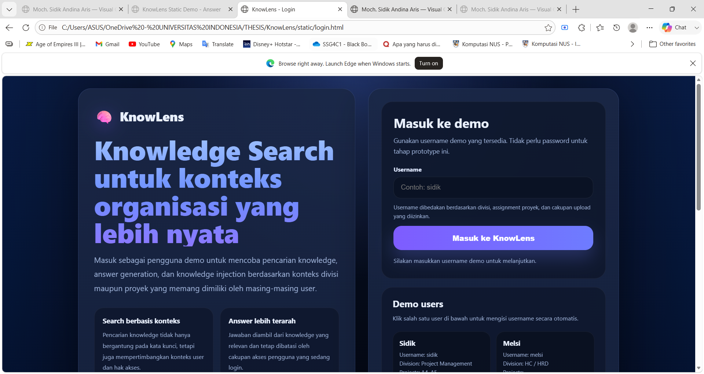
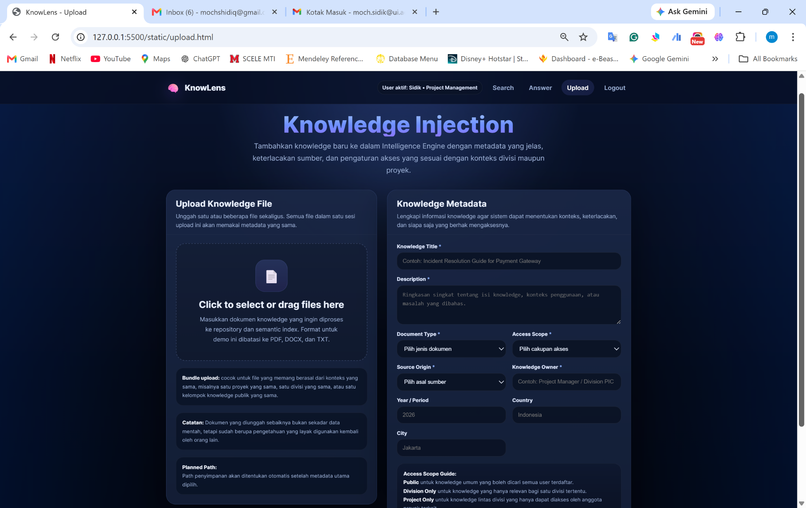
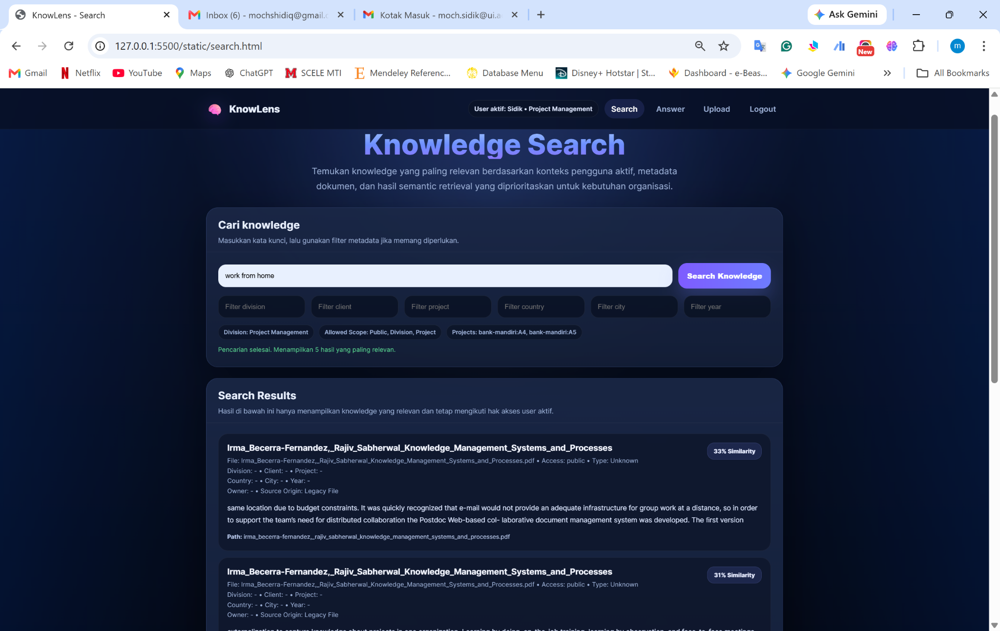
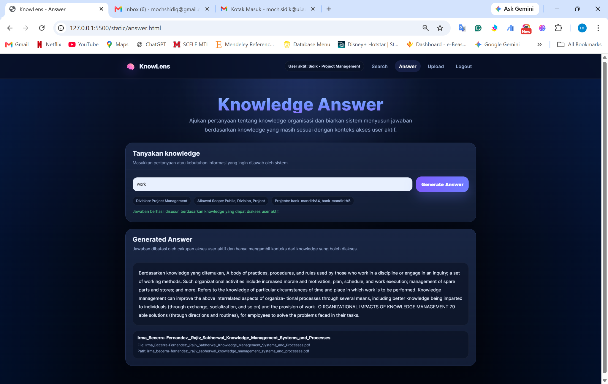

Years of software development exposure
Visual Career Portfolio & Project Case Studies
Moch. Sidik Andina Aris
Senior Software Engineer / Senior .NET / Full Stack Developer
Enterprise Application Development · Technical Lead Candidate · AI/NLP-Based Knowledge Search Research
6+ years building enterprise, data-processing, and web-based software solutions across government-scale tax platforms, university systems, healthcare administration, ERP/HRIS products, document automation, and AI/NLP-based knowledge search research. My work focuses on delivering application features that are technically reliable, aligned with business workflows, and supported by user roles, validation logic, access scope, and operational needs.
Career Positioning
.NET
Angular
SQL Server
Azure
System Analysis
AI/NLP
Primary target
Senior Software Engineer · Senior .NET / Full Stack · Technical Lead Candidate
Preferred setup
Remote / Hybrid · International-ready portfolio
Snapshot
Career at a glance
Years of professional .NET experience
Document automation client projects handled
University system modules monitored/handled
Domain Distribution
Project domains
A compact visual map of the main domains represented in this portfolio.
Technical Stack
Core technologies & delivery skills
Backend
C#, .NET Core, ASP.NET MVC, REST API, Web API, Microservices
Frontend
Angular, TypeScript, JavaScript, HTML, CSS
Database
SQL Server, Tibero, MySQL
Cloud & Tools
Azure, Docker, GitHub, Jira, HP/OpenText Exstream
Analysis & Delivery
System Analysis, Requirement Gathering, Scrum, Agile, User Coordination, Cross-Team Support, Pre-QA Testing
Professional Experience
Experience details
This section is intentionally more detailed than the ATS CV. It explains context, responsibility, and project value without exposing confidential data. My professional experience has gradually evolved from desktop-based document automation, ERP/HRIS customization, and university system development into larger-scale enterprise platforms and research-based AI/NLP system design. Rather than presenting only job responsibilities, this section highlights the context of each role, the type of system involved, the main contribution delivered, and the technical environment used.
Automotive Enterprise Client — Senior Software Engineer / .NET Developer
Developed web-based modules for automotive-related promotional campaigns, service events, and operational workflows. The work involved adapting to client-driven requirements, separated repositories, and short-cycle requests in an Agile/Scrum-oriented environment.
Focus: .NET Core, HTML, JavaScript, SQL Server, operational workflow modules.
Cortex / PSIAP — Senior Full Stack Developer
Worked on a government-scale tax platform involving complex workflows, dynamic rules, notification/message features, validation, approval, and microservices-oriented delivery. The role was full-stack and balanced between front-end and back-end development.
Handled new feature delivery beyond routine maintenance, including requirement analysis, implementation, technical discussion with senior stakeholders, pre-QA testing, and informal front-end support for other team members.
Focus: .NET Core, Angular, TypeScript, REST API, Tibero, Docker, Jira, Microservices.
Healthcare Administrative Information System — Senior .NET Developer
Contributed remotely to a healthcare administrative information system focused on operational and administrative workflows. The project involved cross-country collaboration, daily Scrum routines, coordination with business analysts/testers, and standardization of development practices.
Focus: .NET Core, REST API, Azure, SQL Server, GitHub, Microservices, Scrum.
Enrichment Management System — System Analyst & Senior Programmer
Led development and enhancement of a student program management system covering registration, program selection, internship, research, bootcamp, community development, entrepreneurship, logbook, monthly report, final report, and multi-role validation workflows.
Combined hands-on development and system analysis by coordinating with users, handling tickets, guiding developers, and improving delivery processes across student, lecturer, supervisor, and internal administrative workflows.
Focus: .NET Core, ASP.NET MVC, JavaScript, Web API, SQL Server, PHP.
Spisy 10 ERP/HRIS — Junior C# Programmer
Developed and enhanced ERP/HRIS modules for client-specific needs, including customization, bug fixing, and feature enhancement. Delivered an organization structure module with Excel export and position-mapping logic while adapting quickly with no formal onboarding.
Focus: ASP.NET MVC, JavaScript, SQL Server, GitHub, API integration.
Document Generation & Sanity Check Automation — IT Developer
Developed automated document-generation and data-processing applications for banking and insurance clients, including BCA, BNI, China Life, Sequis, and other insurance clients. Outputs included policy books, billing statements, invoices, delivery orders, email blast workflows, and print-ready PDFs.
Independently handled around 15 client projects and built a scheduled sanity-check mechanism to process FTP/cloud input data, continue production for valid records, generate logs for failed records, and notify clients after processing.
Focus: C# Windows Forms, SQL Server, HP/OpenText Exstream, FTP/cloud processing, TXT/Excel processing.
Featured Projects
Project case studies
Use the filters to scan projects by domain. Each card can later include screenshots, mockups, and deeper STAR-style details.

Government-Scale Tax Platform
Cortex / PSIAP
Full-stack feature delivery in a complex tax platform involving validation, approval, dynamic rules, and microservices-oriented development.

Healthcare Administration
Healthcare Administrative Information System
Remote cross-country system development with Scrum routines, BA/tester coordination, and development standardization.

University Management System
BINUS Enrichment Management System
Student program workflows covering registration, program selection, logbook, reporting, and multi-role validation.

ERP / HRIS Product
Spisy 10 ERP/HRIS
Product customization, bug fixing, and organization structure module with Excel export and position-mapping logic.

Document Automation
RDS Document Generation & Sanity Check
Scheduled FTP/cloud processing, print-ready PDF generation, validation logs, and post-process client notification.

Automotive Enterprise Client
Automotive Promotional & Operational Web Modules
Web modules for promotional campaigns, service events, and operational workflows in an automotive-related environment.
Research Prototype
AI/NLP-based enterprise knowledge search
KnowLens is a research-based prototype concept developed as part of my master's thesis in Master of Information Technology at Universitas Indonesia. The project explores how NLP and semantic search can support enterprise knowledge management by helping users retrieve relevant knowledge based on query meaning, metadata, access scope, and document context. The public portfolio version is presented as a static HTML demo with dummy responses to avoid exposing backend logic, internal data, or confidential documents. It shows the intended flow of searching knowledge, generating answers, and uploading knowledge metadata.
KnowLens static prototype demo
This demo shows the main interaction flow: login as a demo user, search organizational knowledge, generate an answer, and upload knowledge metadata. The public version does not expose backend code, internal data, or confidential documents.
- Context-aware search flow
- Answer generation simulation with traceable sample sources
- Knowledge injection / upload metadata flow
- Static GitHub Pages-friendly demo




Project Archive
Additional selected projects
These projects can be expanded later with screenshots, mockups, or concise case notes.
C# Windows Forms, SQL Server · Insurance policy book and billing note processing.
C# Windows Forms, SQL Server · Handover and maintenance project for insurance processing.
Visual FoxPro · Monthly billing print process and maintenance.
C# Windows Forms, SQL Server · Data mapping before document delivery.
C# Windows Forms, SQL Server · Insurance book processing with billing notes.
.NET Core, SQL Server · Enrichment track workflow for internship programs.
.NET Core, SQL Server · Enrichment track workflow for student research activities.
.NET Core, SQL Server · Community development track workflow.
.NET Core, SQL Server · Group-based entrepreneurship track workflow.
.NET Core, SQL Server · Learning plan, logbook, monthly report, and final report workflows.
Highlights
Selected achievements
Contact
Let's connect
Email: mochshidiq@gmail.com
LinkedIn: linkedin.com/in/MsidikAA
Location: East Bekasi, West Java, Indonesia
Download ATS CV